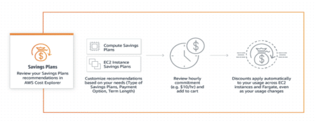

การใช้ AI Agent ทำงานในโปรเจกต์ให้ได้ผลจริงต้องมี 2 สิ่ง คือ Context และ Process — บทความนี้อธิบายการเขียน AGENTS.md เป็นธรรมนูญของโปรเจกต์ที่บอกว่าเราคือใคร ใช้อะไร และกฎเหล็กมีอะไรบ้าง พร้อมการวาง Work Process ของงานเป็น SKILL ที่ใช้ซ้ำได้ ผ่านตัวอย่าง Software Development ตั้งแต่ feature-dev, code-review ไปจนถึง release
เรื่องเล่าของการพิมพ์สัมผัส ตั้งแต่การพนัน $500 ที่ Cincinnati ปี 1888 วิธีฝึกพิมพ์โดยไม่มองแป้น ไปจนถึงประวัติแป้นพิมพ์ไทย จากเครื่องพิมพ์ดีดของ McFarland ที่ทำให้ ฃ และ ฅ หายไป สู่แป้นเกษมณีและแป้นปัตตะโชติ ... แค่จะมาบอก หัดพิมพ์สัมผัสกันเถอะ

ด้วยงานด้าน Security มีความสำคัญและเป็นงานที่ต้องการ Domain Knowledge เฉพาะ, แต่ในปัจจุบันเราสามารถให้ AI Agent ทำให้อย่างง่ายด้วยสิ่งที่เรียกว่า SKILL โดยในนี้จะแสดงการสร้าง SKILL.md เบื้องต้นที่จะช่วยเราสร้างการทดสอบที่ครอบคลุม OWASP Top 10 ครอบคลุม Injection, XSS, Security Misconfiguration และ Broken Access Control ตั้งแต่ตอนทำ Unit Test

ลดค่า EC2 ได้ถึง 40–60% โดยไม่ต้องแก้โค้ดแม้แต่บรรทัดเดียว คู่มือปฏิบัติสำหรับ EC2 Instance Savings Plans — หลักการทำงาน วิธีกำหนดจำนวน Credit Commitment อย่างปลอดภัย

วิธีใช้ Claude AI ในการสร้างและดูแลเอกสาร LaTeX ระดับมืออาชีพ ครอบคลุม Document Class ภาษาไทยแบบกำหนดเอง workflow ด้วย XeLaTeX โครงสร้าง Section แบบ Modular และ CLAUDE.md ที่ทำให้ LaTeX ที่ AI สร้างคอมไพล์ผ่านได้ทุกครั้ง

รันโมเดล AI บนเครื่องได้อย่างราบรื่นด้วย Ollama และ Opencode เรียนรู้การตั้งค่า qwen3-coder-next:q8_0 สำหรับช่วยเขียนโค้ดแบบส่วนตัวและออฟไลน์โดยตรงจาก Terminal รองรับโมเดลขนาด 79.7B พารามิเตอร์

เรียนรู้การสร้างและ deploy AWS Lambda functions ด้วย Java 11 ครอบคลุมการตั้งค่า Execution Role การสร้าง Lambda function และการ implement HTTP Event Handler ด้วย API Gateway v2 เหมาะสำหรับนักพัฒนาที่ต้องการใช้ Serverless Computing กับภาษา Java